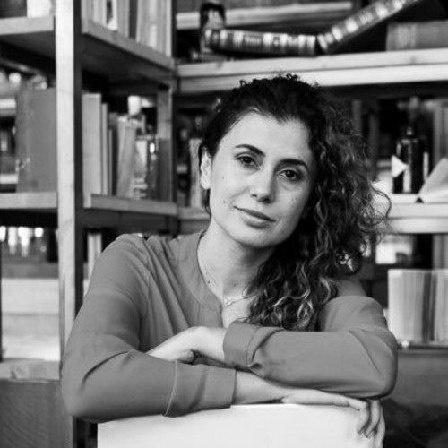
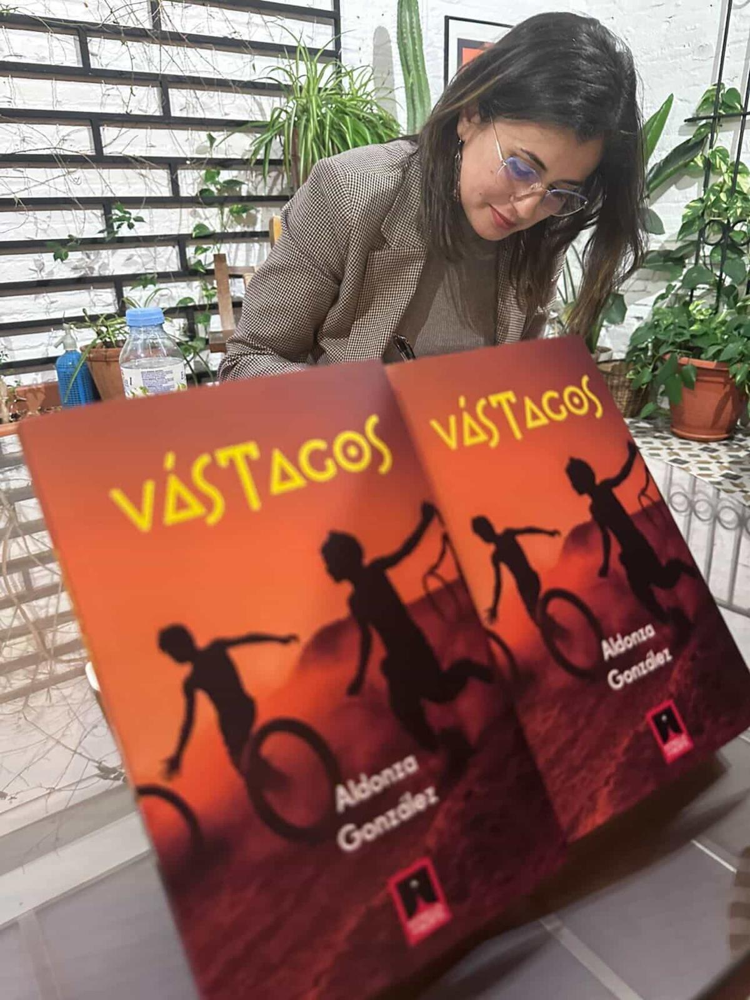
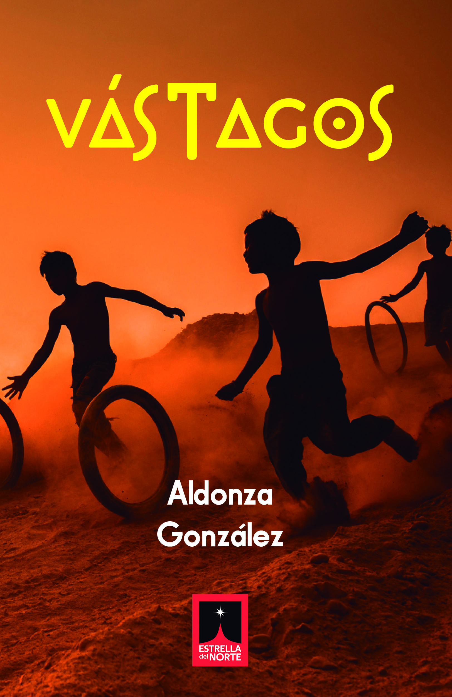
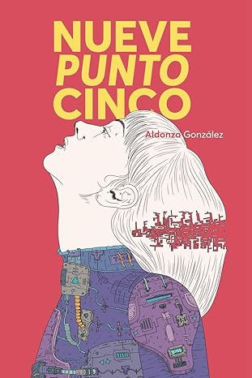
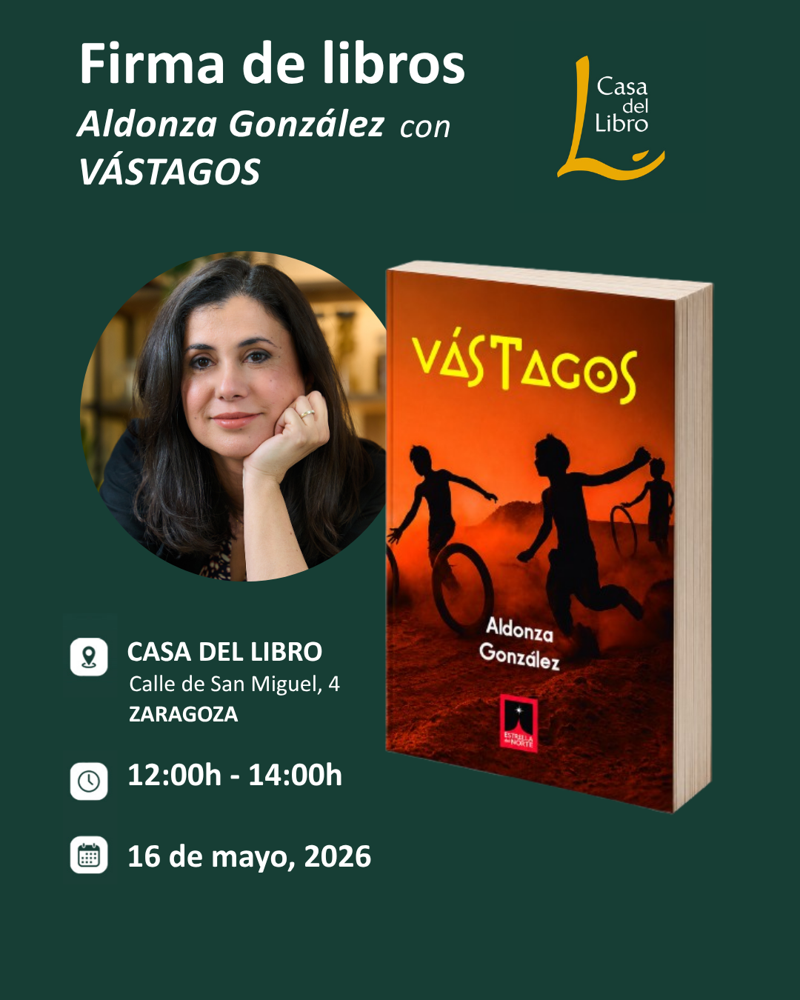
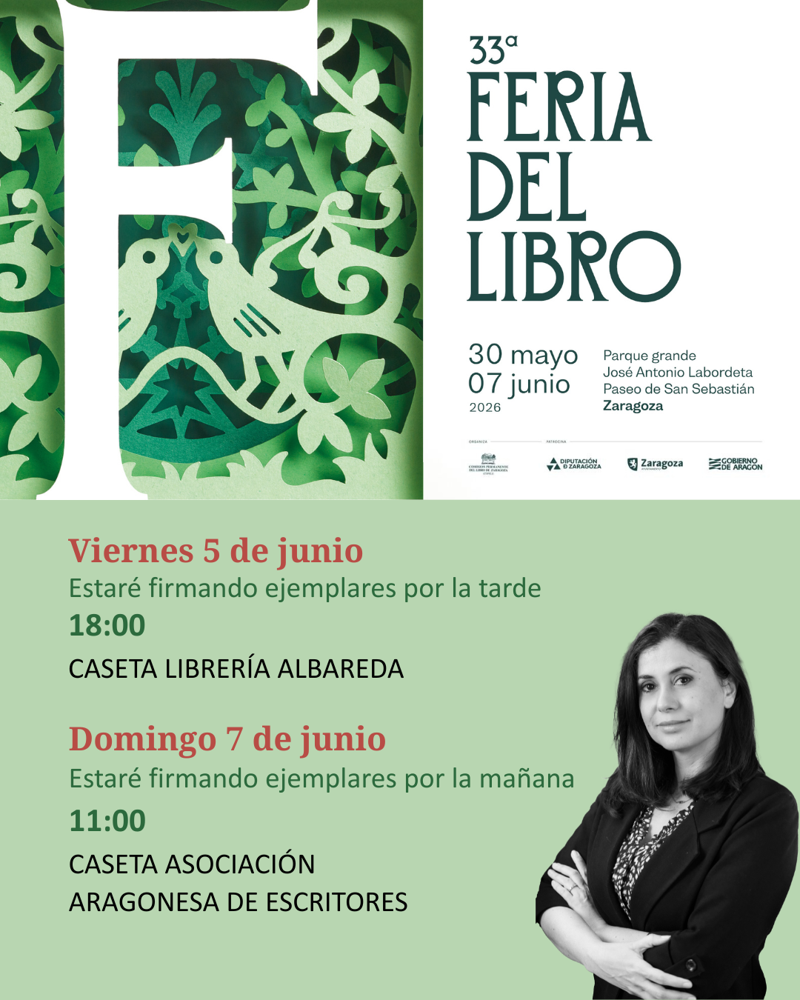
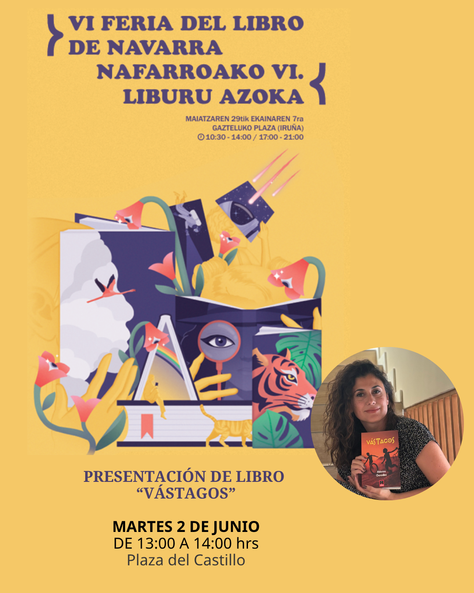
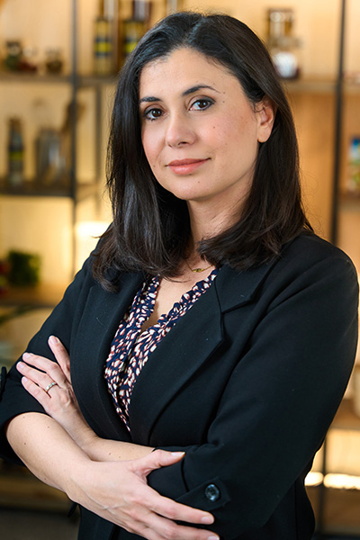

Escritora · Ficción Especulativa
Narradora en tránsito permanente. Historias que nacen de la experiencia y la mirada curiosa de quien siempre está de paso.

Foto © Aldonza GonzálezSobre mí
Aldonza González (Cancún, 1980) es licenciada en Comunicación Audiovisual. Su vida adulta ha sido un viaje continuo que la ha llevado a residir en Francia, Italia, España y México durante más de veinte años.
Entre cajas de mudanza y nuevas ciudades, ha forjado una carrera en marketing y publicidad, sin dejar de lado su vocación creativa como guionista y narradora. En 2021 debutó con la novela Nueve Punto Cinco; hoy continúa explorando historias que nacen de la experiencia y la mirada curiosa de quien siempre está en tránsito.
Contrario a lo que podría pensarse, no le gustan los aviones.

Obras

2025 · Estrella del Norte
Una novela de ficción especulativa que aborda algunos de nuestros miedos más básicos a través de la mirada de los más pequeños. ¿Y si nos morimos todos y solo quedan los niños?

2021
La novela de debut de Aldonza González. Una historia que marcó el inicio de su voz propia como narradora de ficción especulativa.
Dónde conseguirla
Amazon (disponible mundialmente)Vídeo
En los medios
Agenda
Próximas firmas de libros, ferias y presentaciones. Esta sección se actualiza con cada nuevo evento.
Firmas de libros

Ferias


Contacto
Para presentaciones, entrevistas, clubes de lectura o cualquier consulta, escríbeme a través de las redes sociales.
